Case /04 Selected work← All work
Future/Partners
/ The brief
Future Partners is a network of development professionals delivering assignments across Asia and the Pacific. The website hadn’t kept pace with the work. The rebuild had three jobs: show the breadth of the network properly, carry years of search history through the move intact, and leave the team able to run the site themselves.
/ The approach
The project ran in stages, reviewed with the client at each one: inventory first, then structure, then design, then content. The centrepiece is an interactive atlas, a map of the region that glows where the network has worked, with every point opening into real case studies. Around it sit rebuilt services, people and news sections, a migration off the old platform onto a static build the client owns outright, and an editing screen so the team can keep all of it current themselves.
- Design & Astro build
- Interactive atlas of the work
- Content migration & copy rewrite
- Editing screen & client handbook
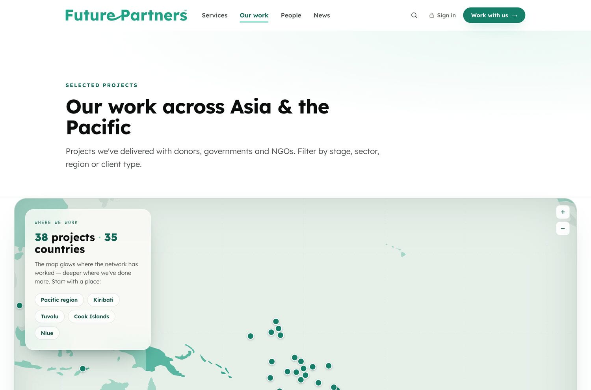
- 0
- pages shipped
- 0
- case studies migrated
- 0
- people profiled
- 0
- redirect rules, so no old link dies
/Start with the inventory
The old site had years of Google standing, and every URL was about to change. So the first week went on listing every page before touching anything, and the build now ships 144 redirect rules: old links, bookmarks and search results all still land where they should. Unglamorous, and the right place to start.
/The atlas took the longest, and should have
A map works easily on a desktop and awkwardly on a phone, where pinch and pan fight the page scroll. The mobile version became its own piece of work: a full-screen view with proper touch gestures, tap-a-country navigation and a bottom sheet for reading case studies one-handed. It went through more revisions than anything else on the site. Some features are like that.
/Feedback, folded straight back in
The client reviewed the site in staged rounds rather than once at the end. Copy corrections, pin legibility on the map, photo crops, links that needed a better home: each round of notes shipped within the week, and a few of the better details on the site started as the client’s margin notes.
/Built to be run by the client
The site is plain files in Future Partners’ own accounts: their code, their hosting, their domain. There’s no database behind it, which keeps the running cost and the attack surface both close to nil. The team edits case studies, profiles and news through an editing screen at its own address, with a plain-English handbook for everything else. The next stage is already designed: a members’ area for the network’s associates, where documents come straight from the network’s own filing instead of being uploaded twice.
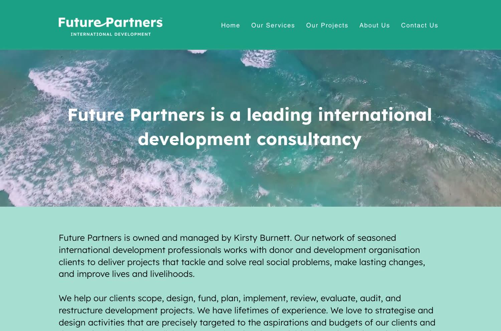
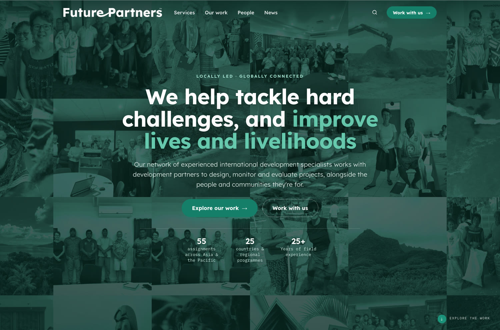
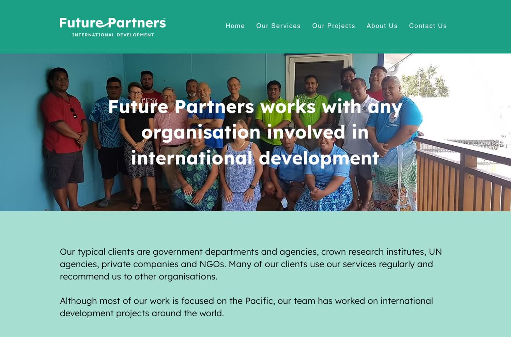
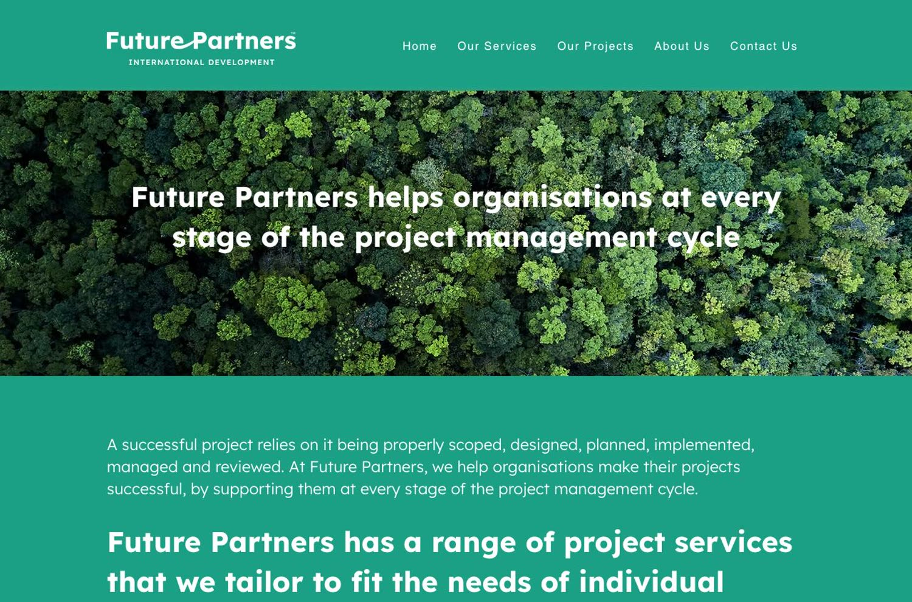
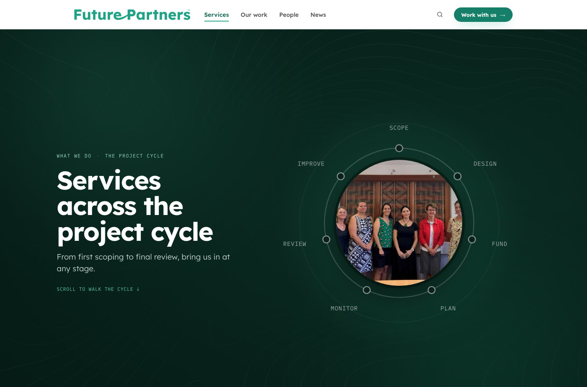
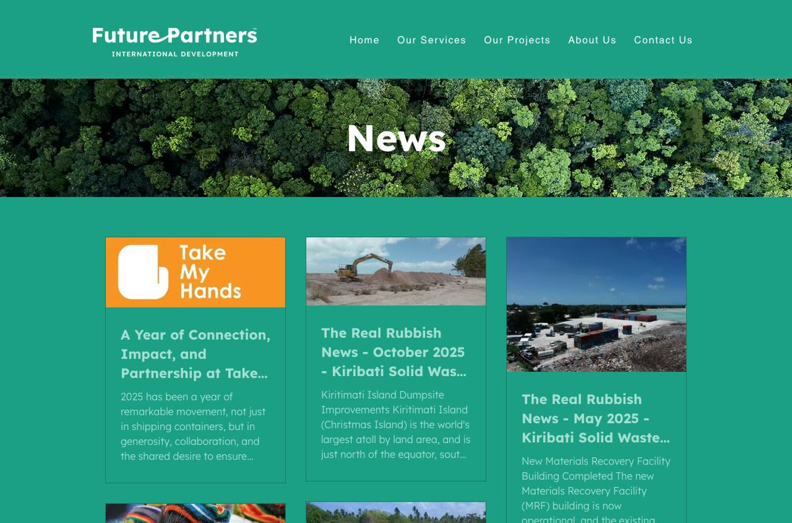
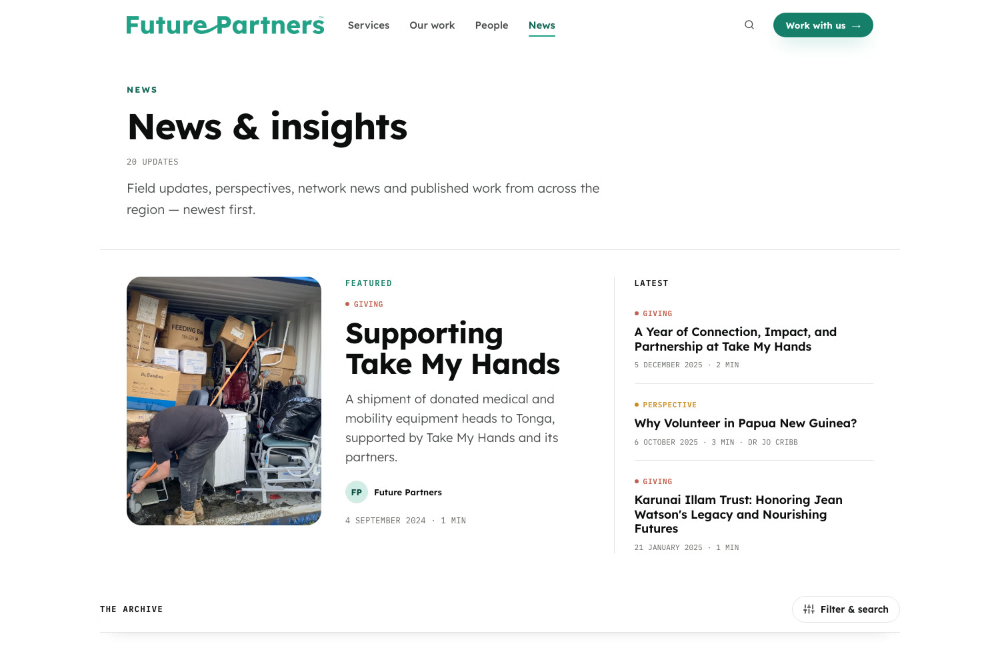
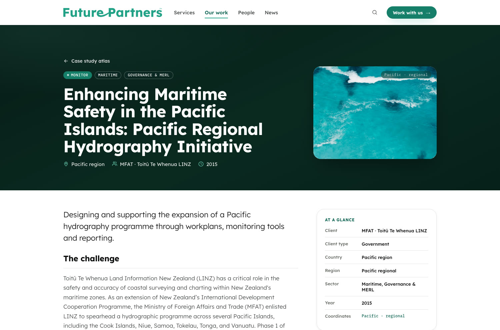
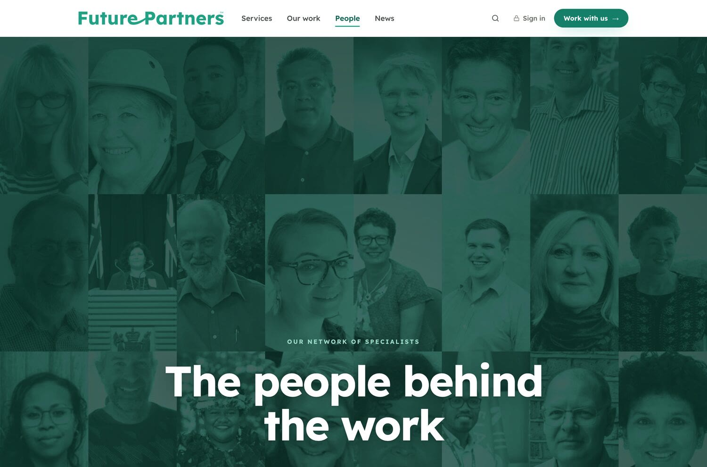
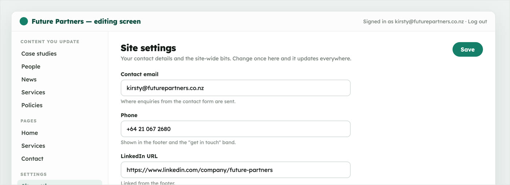
/ The outcome
- Live
- Launched at futurepartners.co.nz in August 2026, ahead of the November plan
- Self-run
- The team edits case studies, profiles and news through their own screen
- Owned outright
- Code, content, hosting and domain all sit in Future Partners’ name
“His patient approach and clear advice make the process easy and saves time in the long run.”
Kirsty, Future Partners